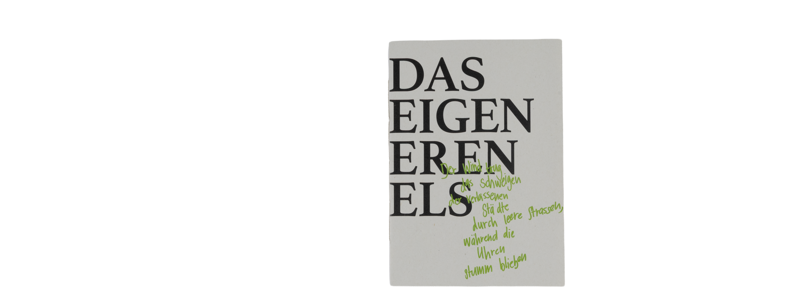
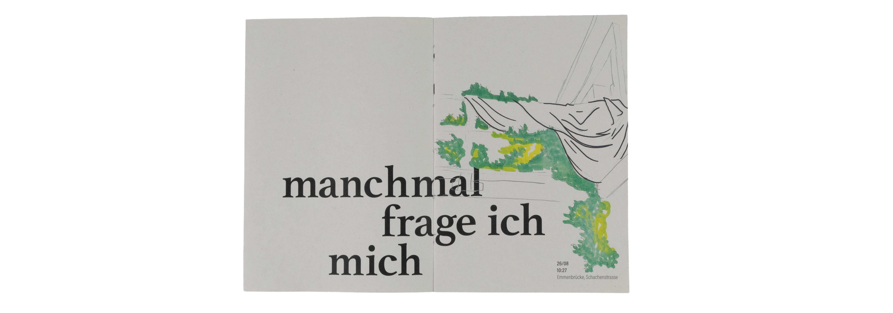
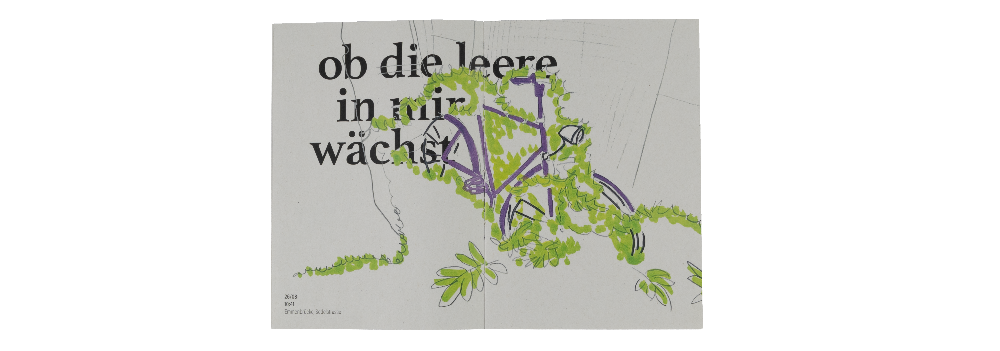
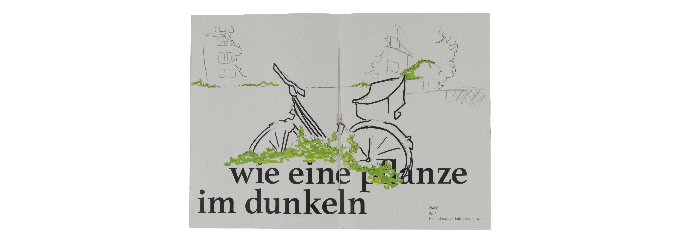
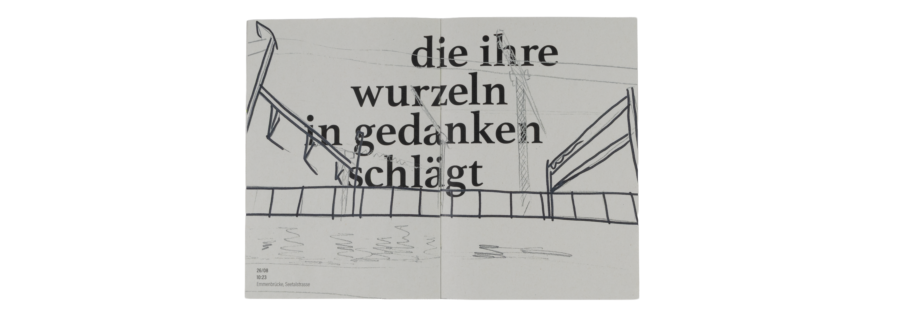
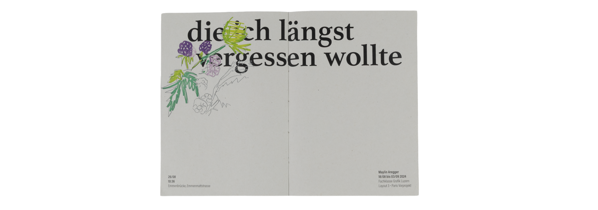
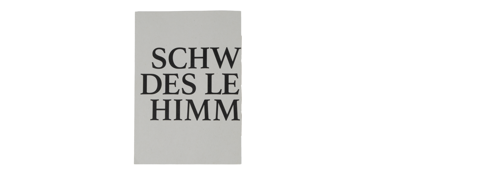
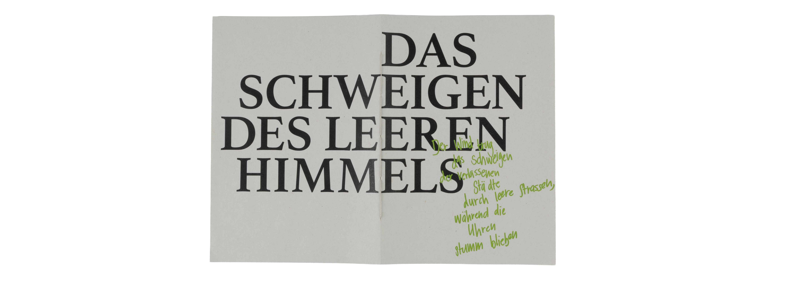
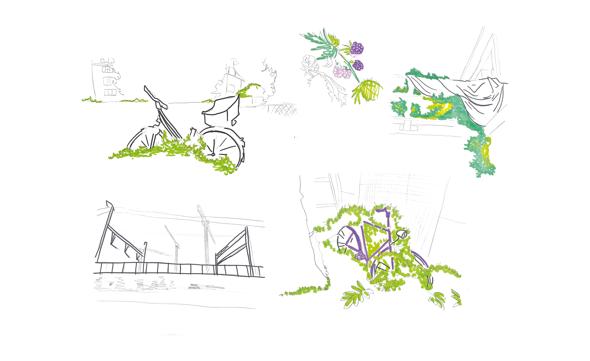

Projects
About me
THE SILENCE OF THE EMPTY SKY
Sometimes I wonder whether the emptiness inside me grows like a plant in the dark, rooting itself in thoughts I wish I had forgotten.
From this sentence grew a series of sketches portraying Emmenbrücke as an overgrown, dystopian landscape—a place where what was forgotten continues to grow and where silence becomes tangible.
Text and image enter a dialogue that makes abandonment palpable and transforms emptiness into a quiet yet undeniable presence.









Paris Pre-project
Martin Infanger
Philippe Desarzens
2024